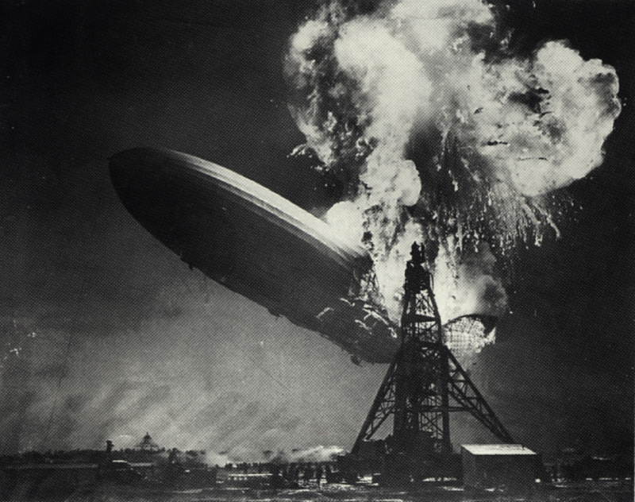
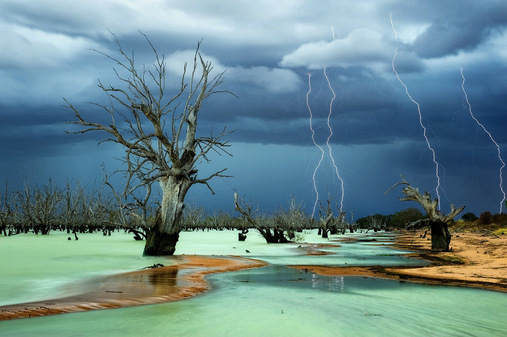
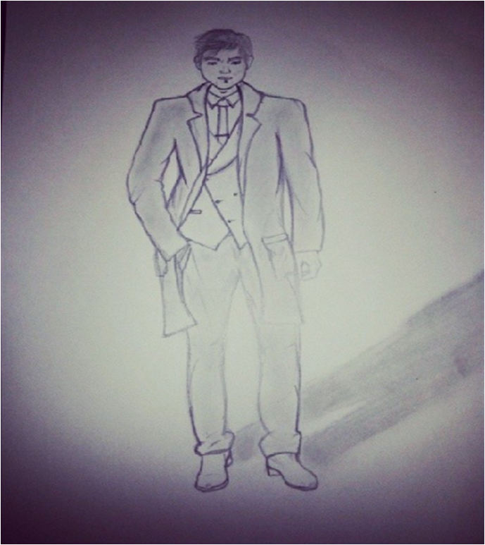
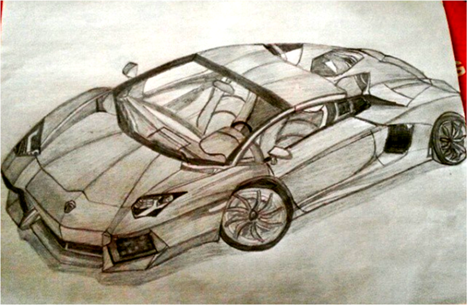

Pictures
Photography
Photography is the science, art and practice of creating durable images by recording light or other electromagnetic radiation, either electronically by means of an image sensor, or chemically by means of a light-sensitive material such as photographic film.
Influential photographs
 The Hindenburg zeppelin catches fire on May 6, 1937.
Photograph by Julie Fletcher, winner of 2013 National Geographic Photo Contest. 


Drawing
Drawing is a form of visual art in which a person uses various drawing instruments to mark paper or another two-dimensional medium. Instruments include graphite pencils, pen and ink, inked brushes, wax color pencils and many others.
Painting
Painting is the practice of applying paint, pigment, color or other medium to a surface (support base). The medium is commonly applied to the base with a brush, but other implements, such as knives, sponges, and air brushes, can be used.
The Mona Lisa is a half-length portrait of a woman by the Italian artist Leonardo da Vinci, which has been acclaimed as "the best known, the most visited, the most written about, the most sung about, the most parodied work of art in the world"
Man in suit by Joelle Machaalany.

Girl with a Pearl Earring is an oil painting by 17th-century Dutch painter Johannes Vermeer. It is a tronie of a girl with a headscarf and a pearl earring. The painting has been in the collection of the Mauritshuis in The Hague since 1902.
Lamborghini by Joelle Machaalany.